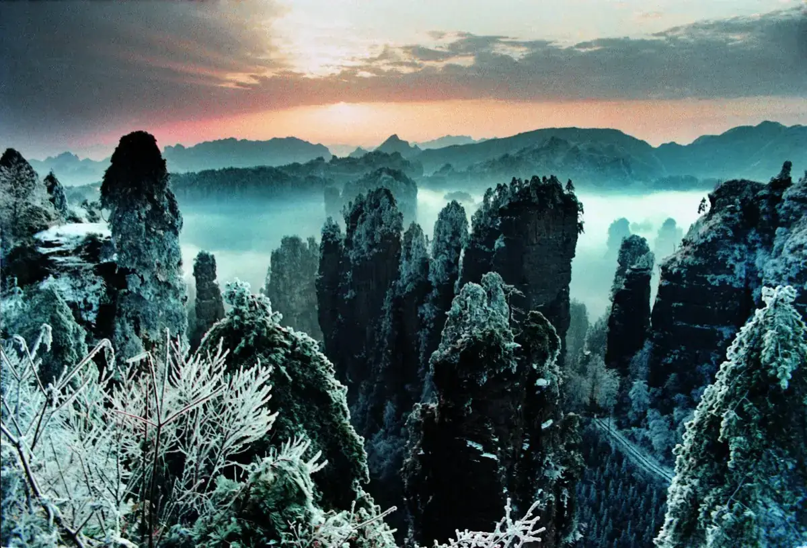
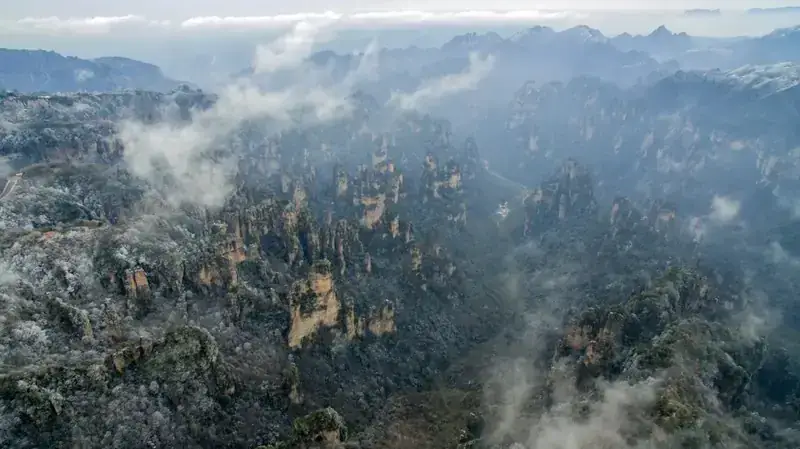
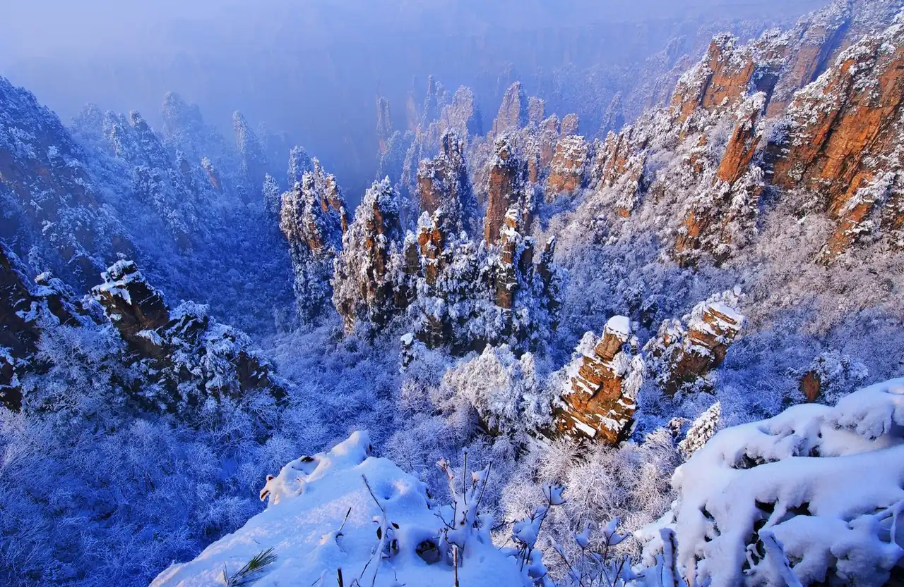

World's longest cable car
7.5 km skyway
A 30-minute ride from the city center up to the summit, passing over villages, roads, and forest.

The mountain with the giant natural arch
Ride the world's longest cable car up a 7.5 km skyway, walk a cliffside glass path, then climb 999 steps through Heaven's Gate — the most dramatic day trip in Zhangjiajie.
At a glance
Tianmen Mountain is a separate peak south of Zhangjiajie city, famous for the 7.5 km cable car, the 99-turn road, the cliffside glass walkway, and the Heaven's Gate natural arch. It is a half-day to full-day experience outside the main Wulingyuan park.
Tianmen Mountain is not inside Wulingyuan — it stands alone just south of Zhangjiajie city. That means it is easier to reach and has a different feel: a single peak with dramatic vertical cliffs, a cave punched through the mountain, and a cable car that starts in the city and ends in the clouds.
The peak is famous in China for the 99 bends of the Tongtian Avenue road, the 999 steps to Heaven's Gate, and the glass walkways bolted to the cliff face. For international visitors, it is the most convenient "wow" experience in Zhangjiajie.
The five highlights of a Tianmen visit.
7.5 km skyway
A 30-minute ride from the city center up to the summit, passing over villages, roads, and forest.

Natural arch cave
A huge archway through the mountain. Reach it by climbing 999 steps or by escalator.

Cliff-hanging path
A narrow glass path bolted to the cliff, with a sheer drop below your feet.

Tongtian Avenue
The dramatic mountain road with 99 switchbacks, seen from the cable car or shuttles.
Two ways to see Tianmen Mountain.
4–6 hours · city up, bus down
Cable car from city ride the 7.5 km line up to the summit.
West cliff walk walk the glass pathway along the cliff edge.
Tianmen Temple visit the temple near the summit.
Escalator down to arch long cave escalators to the Heaven's Gate cave.
999 steps or escalator descend to the bus station.
99-bend bus down return to the city by shuttle bus.
4–6 hours · bus up, cable car down
Bus to mountain gate ride the 99 bends up by shuttle.
999 steps up climb to Heaven's Gate (or take escalator).
Summit walk east or west cliff pathway.
Cable car down return to the city by the 7.5 km cable car.
Apr – May
Mild weather, green forests.
Sep – Nov
Clear skies, best views.
Early morning
Smaller cable car queues.
Avoid winter if the cable car is closed for maintenance. Summer weekends are packed. Check the official website before booking.
Book tickets early
Tianmen tickets are timed. The cable car has limited capacity and morning slots sell out first.
Choose A or B route
A = cable car up, bus down. B = bus up, cable car down. Both are good; A is more popular.
Weather matters
The summit is often foggy. If the forecast is clear, go. If it is foggy, visibility can be near zero.
Wear good shoes
The 999 steps are steep. The glass walkway requires shoe covers, provided on site.
Plan a full day
Tianmen is outside Wulingyuan. Do not try to combine it with the main park in one day.
From Zhangjiajie city The cable car station is downtown, near the railway station. Walk or taxi to the station.
From Wulingyuan Bus or private car to the city cable car station, ~40 minutes.
Route A Cable car up, explore summit, bus down.
Route B Bus to mountain gate, climb/arch, cable car down.
| Item | Detail |
|---|---|
| Tianmen Mountain ticket | ¥275–¥278 (includes cable car and shuttle) |
| Glass walkway shoe covers | ¥5 (or included) |
| Escalator to arch | ¥32 (optional, can walk steps) |
| Opening hours | 08:00 – 18:00 |
| Best time | Early morning; Apr–May, Sep–Nov |
Prices are reference values for international visitors and may change by season or operator. Confirm before booking.
Gallery
Good to know
The cable car is 7.5 km long and takes about 28 minutes, making it one of the longest passenger cable cars in the world.
No. You can take escalators through the cave to reach the Heaven's Gate arch. The 999 steps are optional and can be climbed up or down.
No. Tianmen is a separate mountain with its own ticket, about ¥275–¥278. It is not part of the Wulingyuan combo ticket.
Route A goes cable car up and bus down. Route B goes bus up and cable car down. The sights are the same, but the order reverses. Route A is more popular.
It is not recommended. Tianmen alone takes 4–6 hours, and travel between the two areas adds another hour. Plan separate days.
Fog can close the glass walkways and limit views. The cable car usually still runs unless winds are extreme. Check the weather the night before.
More to explore


{kind=link}
{kind=link}
{kind=link}
{kind=link}